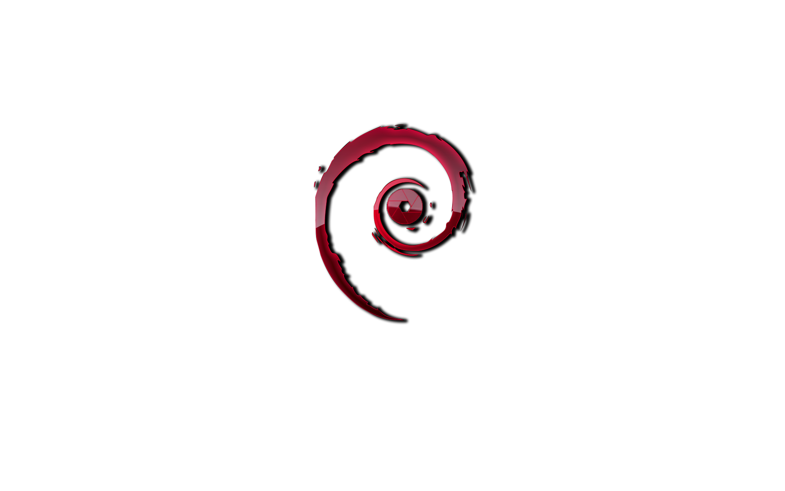

SmadaWhitehat CTF Competition
SMITH (SmadaWhitehat) adalah sebuah komunitas pegiat IT (Information Technology) di SMAN 2 SUMENEP, yang bertujuan untuk mempelajari, mengembangkan, dan menciptakan sebuah technology yang positif. SMITH terbentuk pada 15 November 2017 yang di dirikan oleh 3 orang murid SMAN 2 SUMENEP.